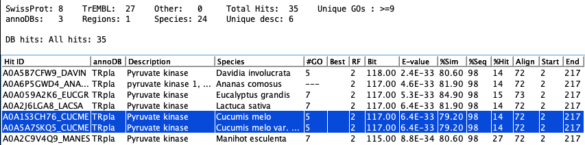
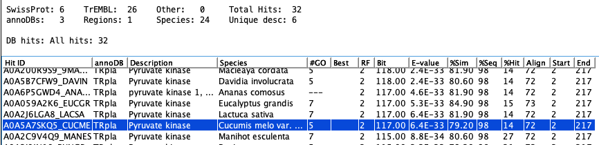
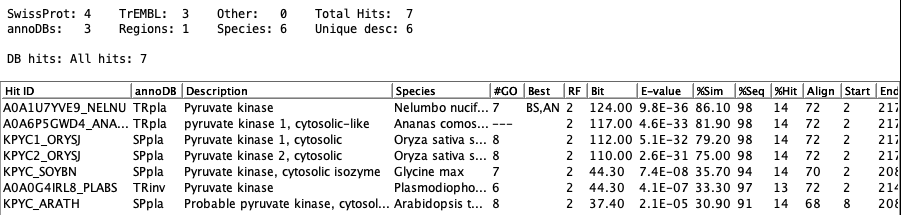
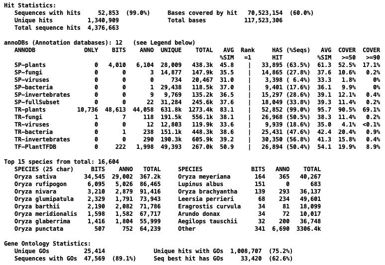

Though the options for the annotation should be set in the runSingleTCW interface,
they can be Save and then the annotation run from the command line with:
./execAnno <project>
Contents
You may wish to re-run annotation steps for following reasons:
- Update to a newer AnnoDB (e.g. more recent UniProt release): In this case,
you would delete existing annotation and all existing hit (tab) files.
- Add a new AnnoDB: In this case, make sure to uncheck all annoDBs in the
runSingleTCW interface that are already in the database.
- Remove an annoDB: In this case, you will need to delete the existing annotation
and reload all annoDBs that you want to keep. The original hit files can be reused.
- Add additional similar pairs. In this case, turn off all other options and run Annotate;
additional pairs will be added with the existing hit files.
| The image on the right shows what can be removed. Select the top option for
#1 and #3. Select the third item for the #1.
| 
|
Changes can be accomplished by editing the AnnoDB list in runSingleTCW, then
re-running Annotate, and responding to the yes/no prompts
which will appear on the console, as follows (note, at any point during these
question, you can Ctrl-C to stop the process):
?--Annotation exists in database. Enter [a/d/e]
Add to existing annotation [a], Delete annotation [d], Exit [e]:
Answer 'a' to add to the existing annotation.
Answer 'd' to replace all annotation. Note that this
does NOT delete hit files from disk, and they may be loaded again if desired.
Answer 'e' to exit.
The following is a flow for adding annotation from existing files.
Checking annoDB fasta
DB#1 diamond SP AA: projects/DBfasta/UniProt_demo/sp_plants/uniprot_sprot_plants.fasta
DB#2 blast SP AA: projects/DBfasta/UniProt_demo/sp_fullSubset/uniprot_sprot_fullSubset.fasta
DB#3. blastn GB NT: projects/DBfasta/NT/dcitri.fa
Pairs blastn: /projects/demoTra/hitResults/tra_seqNT.fa
Pairs tblastx: /projects/demoTra/hitResults/tra_seqNT.fa
Pairs diamond: /projects/demoTra/hitResults/tra_orfSeqAA.fa
Checking for existing tab files
?--At least one hit tab file exists for selected set.
Use current tab files [u], prompt on each tab file [p], exit[e]: p
DB#1 uniprot_sprot_plants.fasta
Output exists: /projects/demoTra/hitResults/tra_SPpla.dmnd.tab; Date: Sun Jan 7 1:37:16 MST 2021
?--Load this existing file [y] or perform new search [n] [y/n]:
A 'y' will use the existing file and not redo the search.
If you get the prompt:
?--DB#1 The annoDB projects/DBfasta/UniProt_demo/sp_plants/uniprot_sprot_plants.fasta
has been processed previously. Continue? (y/n)?
This means you have already added an annoDB with the exact same path name.
Pairs only
The pairs-only can be removed from the database using:
./execAnno <DB Name> -p
The default for this option is None, though the database queries are faster
if the tables are smaller. If there is no reason to need all hits, it is strongly recommended
that you use the stringent Description option.
Prune: None
This option keeps all hits found using the search parameters provided on the Add or Edit AnnoDB panel.
The following shows the hits for tra_018, where the two highlighted hits have the same alignment values.

Prune: Alignment
If all alignment columns in the Blast or DIAMOND file are the same between two hits
for a sequence along with the hit sequence length and description, the best one is retained. For example,
the following are from the output of DIAMOND showing all alignment values:
tra_018 tr|A0A1S3CH76|A0A1S3CH76_CUCME 79.2 72 15 0 2 217 80 151 6.41e-33 117
tra_018 tr|A0A5A7SKQ5|A0A5A7SKQ5_CUCME 79.2 72 15 0 2 217 80 151 6.41e-33 117
The descriptions are compared using the same rules
as discussed below for Prune: Description. The actual hit sequences are NOT compared.
The following is the results for tra_018.

Sometimes two hits can look identical from the Sequence Detail Hit Table,
but the Show..
button shows all columns and will elucidate the differences (see Show A0A5A7SKQ5_CUCME).
The hit start or hit end may be different, or the hit sequence lengths.
Prune: Description
The best hit for each 'description' for each annoDB is retained.
The full description must be the same except that the comparison
is case-insensitive and any description ending with "{...}" has the ending removed.
For example, the following three are the same:
ZF-HD family protein {ORGLA09G0180300.1}
ZF-HD family protein {ORGLA09G0074600.1}
ZF-HD Family Protein
The following shows the results for tra_018. Note that both both TRpla and TRinv have
a description "Pyruvate kinase" as the pruning is by annoDB.

For both the Description and Alignment pruning:
- if two hits are being compared and found to be the same,
- if the GO database is defined and if two bit-scores are close,
- then the hit with the most GOs is saved.
For example, the
following shows the top hits for tra_011, where Description pruning only keeps A0A0J8CG74_BETVU
since its bit-score is just a little lower than A0A022Q8Q6_ERYGU
and it has 2 GOs.

If it is desired to always use the best bit-score,
do not define the GO database until after Annotate is run, then define the database and run
GO only.
The following allows you to experiment with the pruning. However, it is not guaranteed to
leave your database in a perfect state, so you may want to re-Annotate
once you figure out what pruning scheme you want.
|
First define the GO database and select Ignore on Annotate. The GOs should not be computed until after
the hits are finalized. However, the pruning algorithm will use the #GOs in determining the best hit,
which is why you need to define the GO database (built with runAS). If you do not plan on creating
a GO database, than this can be ignored.
|

|
Command line options:
-p Prune redundant hits (annotation must already be done)
-pt <integer> 1 Alignment 2 Descriptions (this overrides what is set in Options)
-pp <integer> Print first n pruned seq-hits per annoDB
-pr Save/restore hit tables before processing
- Using runSingleTCW, set the Prune option to None and check Ignore on Annotate.
Run Annotate and exit.
- View your database with all hits.
- Run from the command line:
./execAnno demoTra -p -pt 1 -pp 4 -pr
The "-pr" options save the hits to two tables in the database prefixed with "save". It will then create the hits tables
with pruning option of "Alignment".
The "-pp 4" option will print to the terminal the first 4 pruned hits per annoDB (do not add this flag if you do not care to see these).
- View your database with all the identical alignments per annoDB removed.
- Run from the command line:
./execAnno demoTra -p -pt 2 -pp 4 -pr
The "-pr" option will notice that the saved tables exist and will restore them before continuing.
- View your database with all the identical descriptions per annoDB removed.
- The saved hit tables are still in the database; they will be removed when you remove annotation to re-annotate using
runSingleTCW,
or you can drop them using the mysql commands:
drop table save_unique_hits;
drop table save_unitrans_hits;
The following table shows the reduction in hits for the two prune types from demoTra and Oryza sativa.
| | DemoTra | Oryza sativa
|
|---|
| Prune Type | Unique Hits | Reduce | Seq-hit pairs | Reduce
| Unique Hits | Reduce | Seq-hit pairs | Reduce
|
|---|
| None | 12,472 | -----
| 18,442 | -----
| 1,340,909 | -----
| 4,376,663 | -----
|
| Alignment | 11,300 | 9.4%
| 16,660 | 9.7%
| 1,221,375 | 8.9%
| 4,065,913 | 7.1%
|
| Description | 4,378 | 64.9%
| 7,112 | 61.4%
| 340,909 | 74.7%
| 1,514,641 | 65.4%
|
Further comparisons for Oryza sativa
|
All terms are described on
the Overview Reproduce popup, but briefly: Bits is the hit with the
best bit-score for a sequence. Anno is the hit with the
best annotation for a sequence. Rank=1 is the best hit for a sequence for an annoDB, e.g. if there
are 6 annoDBs, a sequence has 6 Rank=1.
The Only, Bits, and Anno are
about the same between the no pruning and description pruning. The Unique and Total are greatly reduced for the description pruning.
Right of Rank=1 refer to the Rank=1 hits. All numbers are just
about the same between the no pruning and description pruning.
The high hitting species stay about the same for Bits and Anno, but the lower hitting
species vary.
The Sequences with GOs
reduced from 89% to 86%, but the Best hit with GOs (Best Bits) increased from 62.6% to 66.5%.
|
Overview with no pruning

Overview with description pruning

|
To save an existing annotated database, use:
mysqldump -u <user> -p <database_name> > <dump_file_name>
{kind=link}
{kind=link}
{kind=link}